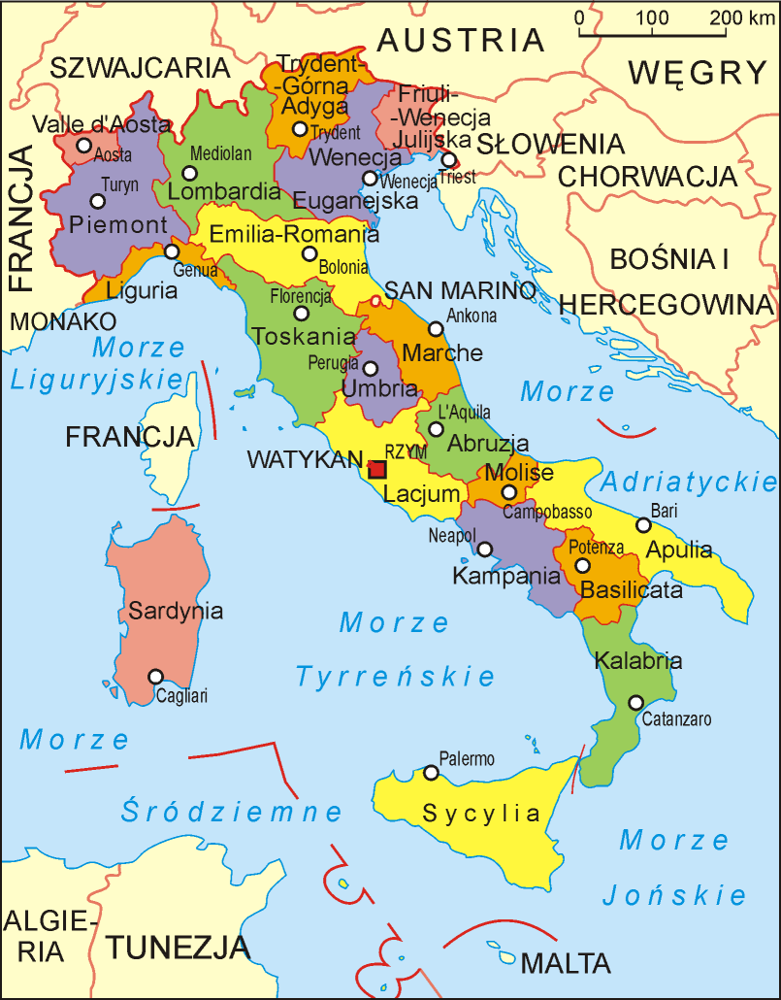

Stolicą Włoch jest Rzym. Powierzchnia Włoch to 301 tyś km2. We Włoszech mieszka 58,6 mln ludzi. Rdzenni Włosi stanowią 93% społeczeństwa. Aż 80% Włochów to zdeklarowani katolicy, liczba osób ochrzczonych jest jednak dużo większa. Największą mniejszością religijną są muzułmanie, którzy stanowią 1% całej populacji. Język włoski jest uważany za jeden z najprostszych do nauki, zwłaszcza dla osób, które znają lub uczyły się języka hiszpańskiego. Jest jednak wiele odmian języka włoskiego.
Hymn Włoch:
Flaga Włoch z podziałem na regiony:

Dlaczego wybrałem Włochy?
Byłem we Włoszech na wakacjach kilka razy. Bardzo podobały mi się krajobrazy, jedzenie, architektura oraz gościnność Włochów, dlatego na tej stronie opiszę ich kulturę.